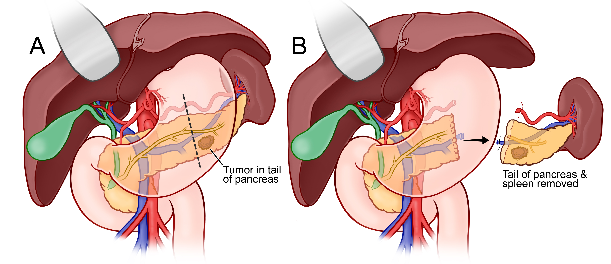

Surgery
Distal Pancreatectomy
Surgery for tumors in the body or tail of the pancreas — often performed minimally invasively.
What Is a Distal Pancreatectomy?

A distal pancreatectomy removes the body and tail of the pancreas — the portions to the left of the portal vein. It is the standard surgery for tumors located in these areas, including pancreatic adenocarcinoma, neuroendocrine tumors, and selected cystic lesions.
Unlike the Whipple procedure, distal pancreatectomy does not require reconstruction of the digestive tract. The remaining head and neck of the pancreas continues to produce digestive enzymes and insulin. Recovery is generally faster than after a Whipple.
What Is Removed
The following structures are typically removed:
Surgical Approaches
Distal pancreatectomy can be performed open, laparoscopically, or robotically. Minimally invasive approaches are used whenever feasible and are associated with less blood loss, shorter hospital stay, and faster return to normal activity.
What to Expect
In the Hospital
Hospital stay is typically 4–7 days for minimally invasive surgery and 5–9 days for open surgery. A drain is left near the pancreatic stump to monitor for fluid leaks (pancreatic fistula). Diet is advanced from liquids to regular food over a few days.
At Home
Full recovery takes approximately 4–6 weeks. Fatigue and dietary changes are the most common challenges. Pancreatic enzyme replacement may or may not be needed depending on how much of the pancreas remains.
After Splenectomy
Because the spleen plays a role in immunity, patients who have had it removed are at increased risk for certain bacterial infections. Vaccinations against encapsulated bacteria (pneumococcus, meningococcus, Haemophilus influenzae) are given before or shortly after surgery.
After Recovery
Adjuvant chemotherapy is recommended for most patients after distal pancreatectomy for cancer, beginning 4–8 weeks post-operatively. Follow-up CT scans every 3–6 months monitor for recurrence.
Questions About Distal Pancreatectomy?
Dr. Correa performs distal pancreatectomy — including minimally invasive and robotic approaches — at Mount Sinai in New York City.